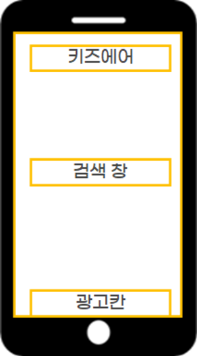

우리 아이를 위한
실내 공기질 케어 앱
정부 공공데이터를 활용해 영유아 시설의 공기 상태를 실시간으로 보여주고, 상쾌하고 깨끗한 디자인을 통해 신뢰할 수 있는 사용자 경험을 설계했습니다.
! 기획 배경
실내 공기질 관리의 문제점을 분석했습니다.
환경 리스크
실외보다 실내 공기 오염이 영유아 건강에 더 치명적이라는 결과가 있음에도 불구하고, 어린이집의 실시간 실내 데이터를 통합해서 보여주는 서비스는 없었습니다.
학부모 니즈
학부모들은 미세먼지가 심한 날 자녀가 있는 공간의 환기 상태나 공기청정기 작동 여부를 직접 확인하고 싶어 하는 정보 갈증이 매우 컸습니다.
S 분석 전략
강점과 기회를 분석해 전략을 수립했습니다.
실내 공기질 특화 서비스
초기 사용자 확보 필요
국민적 관심도 증가
기능 확장 가능성
화면 구조 설계
공공데이터 API를 실시간으로 가공하여 스플래시, 메인 대시보드, 상세 조회, 개인 위젯 설정까지 이어지는 매끄러운 흐름을 기획했습니다. 사용자가 원하는 정보를 최소한의 터치로 찾을 수 있도록 최적화했습니다.
Kids Air 정보 설계 구조도
이미지를 클릭하면 크게 볼 수 있습니다

📍 위치 기반 인터랙션
현재 위치나 자녀가 다니는 어린이집을 등록하여 주변 공기 상태를 한눈에 파악합니다.
📌 맞춤형 위젯 시스템
앱을 직접 열지 않고도 스마트폰 배경화면에서 공기 상태를 바로 확인할 수 있습니다.
디자인 기법: 뉴모피즘
깨끗하고 맑은 공기의 느낌을 주기 위해 배경과 요소의 색상을 맞추고, 오직 빛과 그림자의 깊이만으로 입체감을 구현하는 뉴모피즘 디자인을 선택했습니다.
빛의 원리
왼쪽 상단의 밝은 하이라이트와 반대편의 부드러운 그림자를 배치해 배경에서 자연스럽게 솟아오른 조형미를 완성했습니다.
색상 정체성
배경과 버튼 색을 동일하게 매칭해 시각적 피로를 줄였으며, 공기질 수치에만 포인트 컬러를 사용하여 직관성을 높였습니다.
가상 UI 체험
PM 10 농도
12 ㎍/m³
기획안에서 실제 UI가 되기까지
스플래시 화면 과정
기획서

최종 UI

공기질 대시보드 과정
기획서

최종 UI

메뉴 및 기능 구성
기획서

최종 UI

검색 인터페이스
최종 검색 UI

공공데이터 선순환
정부의 방대한 데이터를 누구나 이해하기 쉬운 형태로 재가공하여 영유아 보육 환경을 투명하게 만들었습니다.
보육 환경 개선
실시간 수치가 공개됨에 따라 어린이집 스스로 쾌적한 환경을 유지하도록 유도하는 계기를 마련했습니다.
시장 선점 효과
국내 최초의 어린이집 전용 실내 케어 앱이라는 타이틀로 기존 서비스들 사이에서 독보적인 경쟁력을 확보했습니다.